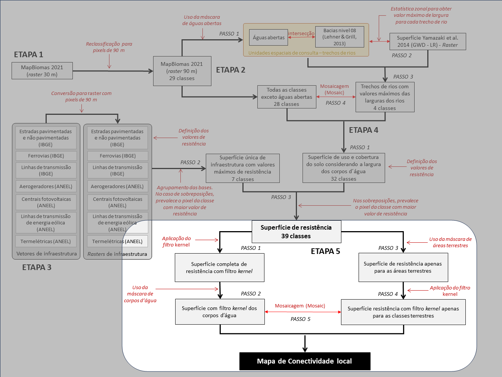

7 Aplicação de filtro e camada final
A aplicação do filtro kernel para gerar o resultado de conectividade local corresponde à Etapa 5 da análise (Figura 7.1).

7.0.1 Passo 1
Esse passo pode ser subdividido em duas ações:
- A. Usando a ferramenta
Focal Statistics, aplicamos a função kernel à superfície de resistência gerada para todo o Brasil (Figura 7.2). Esta análise considerou uma função de decaimento linear em uma janela móvel definida por um raio de 23 pixels (~2.070 m).
Focal Statistics para aplicar o kernel com função de decaimento linear na superficie de resistência de todo Brasil.’- B. Usando a ferramenta
Reclassifydo Spatial Analyst, construímos, a partir da superfície de resistência original (sem o kernel), uma máscara de águas abertas, onde as classes de largura dos rios receberam o valor de 1 e as demais classes foram consideradas como NoData (Figura 7.3).
Reclassify para construir a máscara de águas abertas para separar a influência dos corpos d’agua na conectividade de ambientes terrestres.’7.0.2 Passo 2
Multiplicamos a superfície de resistência completa (gerada para todo Brasil) com o filtro kernel (Passo 1A) pela superfície de águas abertas (Passo 1B). Essa multiplicação foi realizada com o uso da ferramenta Raster Calculator (F@fig-8) e gerou uma nova superfície com os valores de conectividade local apenas para os corpos d’água.

Raster Calculator aplicando o filtro kernel de decaimento linear.’7.0.3 Passo 3
Usando a ferramenta Reclassify do Spatial Analyst construímos, a partir da superfície de resistência original (sem o kernel), uma máscara apenas das áreas terrestres, onde as classes de largura dos rios foram consideradas como NoData (Figura 7.5).
Reclassify para remover a influencia dos corpos’dágua na conectividade de ambientes terrestres.’7.0.4 Passo 4
Utilizando a ferramenta Focal Statistic, aplicamos o filtro kernel à superfície terrestre gerada no Passo 3. Essa operação originou uma camada de conectividade local onde as áreas terrestres não são influenciadas pelas águas abertas (Figura 7.6).
Raster Calculator aplicando o filtro kernel de decaimento linear.’7.0.5 Passo 5
Usando a ferramenta Mosaic to new Raster (Figura 7.7), realizamos a mosaicagem das superfícies geradas nos Passos 2 e 4. E, por fim, para calcularmos os valores finais de conectividade local, multiplicamos os valores de resistência por -1, por considerarmos que a conectividade é o inverso dos valores de resistência suavizados pelo filtro kernel (Figura 7.8).
Mosaic to new Raster para gerar a camada final de resistência da paisagem’